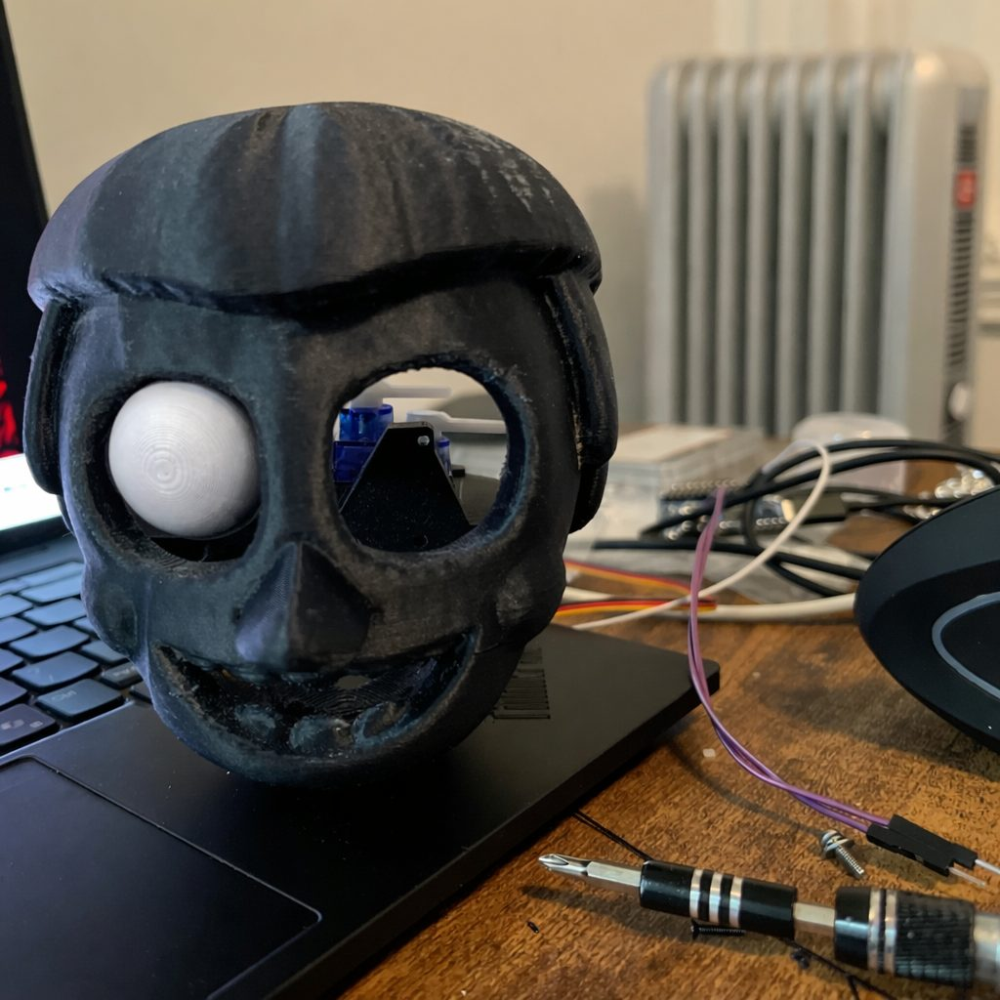

Overview
A 14-inch animatronic desktop assistant combining 3D-printed mechanics, embedded firmware and an LLM agent.
The eyes are driven by servos from a Seeed XIAO ESP32-S3 Sense (built-in camera and microphone). The agent runs
on a laptop and routes each query between a local model (Qwen 2.5 7B via Ollama) and a cloud model (GPT-4o-mini).
Status: paused since February 2026, after calibrating the eye servos. The agent, its tools and
its memory work on the laptop. On-device face-tracking firmware for the ESP32-S3 compiles but has not been tested on the hardware yet.
Specifications
2 of 4
Eye Servos Driven So Far (one eye fitted)
2
Axes per Eye (pan, tilt)
Mechanical Design
The dual-axis eye mechanism is based on Will Cogley's open-source animatronic eye design (CC BY-NC-SA 4.0).
The design gives each eye independent pan and tilt through SG90-driven linkages; one eye is fitted and calibrated so far.
- Fabrication: 3D-printed parts, iterating on tolerances for servo mounts and linkage pins
- Calibration: per-servo angle limits set in firmware to avoid mechanical interference
Embedded Systems
- XIAO ESP32-S3 Sense: camera and microphone (the Wi-Fi link to the laptop agent is not built yet)
- PCA9685: 16-channel I2C PWM driver for the SG90 eye servos (2 driven so far)
- MAX98357A: I2S amplifier for planned voice output
- Firmware (C++, PlatformIO): servo test firmware, and on-device face detection that steers the eyes (compiles; hardware test pending)
LLM Agent
- Routing: a complexity score picks the local model (Qwen 2.5 7B on the laptop GPU) or the cloud model (GPT-4o-mini) per query
- Tools (function calling): web and news search, webpage fetch, Selenium browser automation, Python code execution and vision-based computer control
- Memory: ChromaDB for episodic conversation memory, SQLite for structured user facts, with relevant past conversations retrieved into each prompt
Technology Stack
Python, Ollama, Qwen 2.5 7B, GPT-4o-mini, ChromaDB, SQLite,
Selenium, C++, PlatformIO, ESP32-S3, PCA9685
Future Development
- Face tracking on hardware: test the on-device face detection driving the eyes
- Voice: speech-to-text and text-to-speech synchronized with the eyes